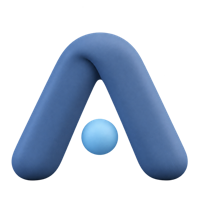
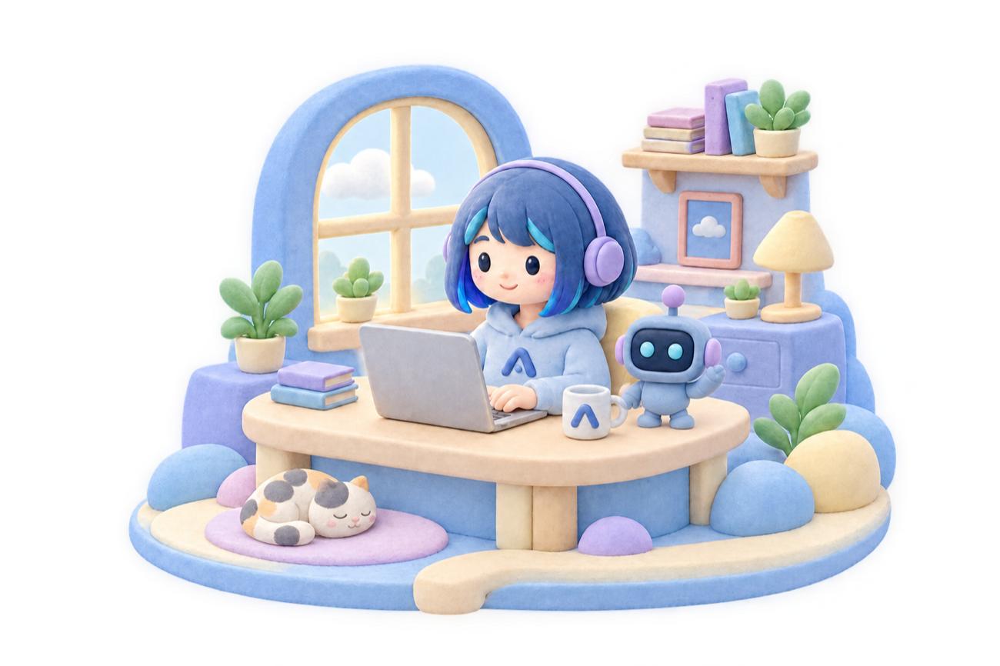
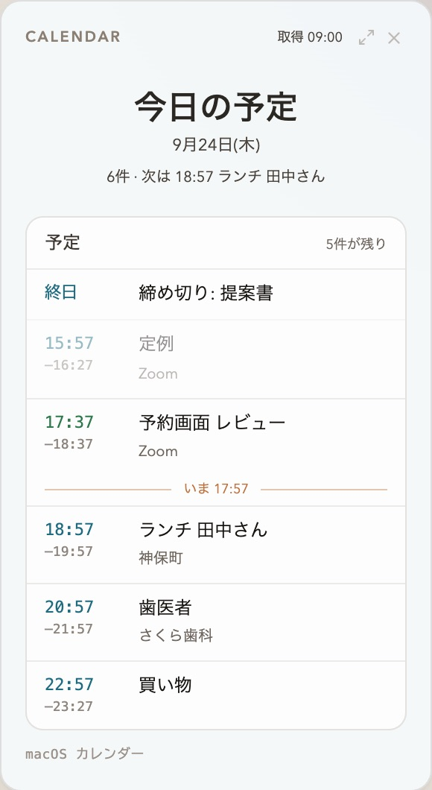
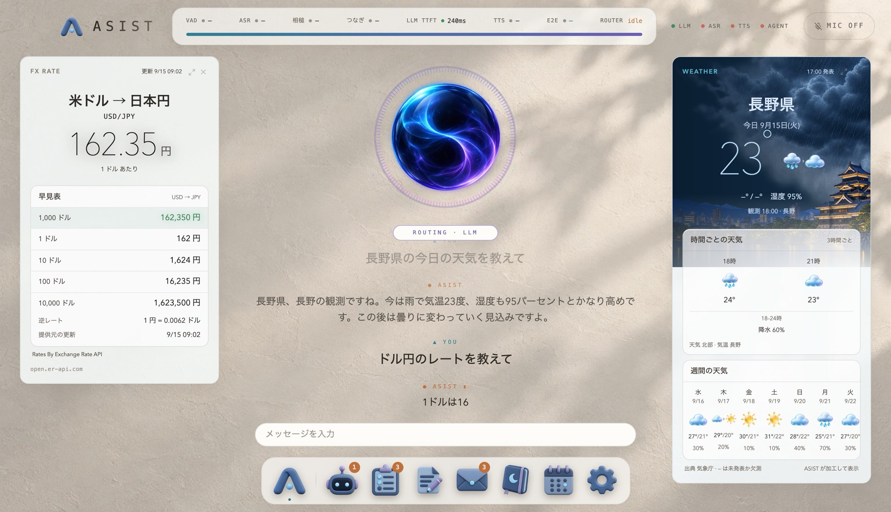
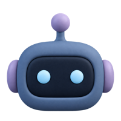
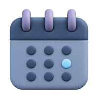
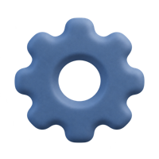
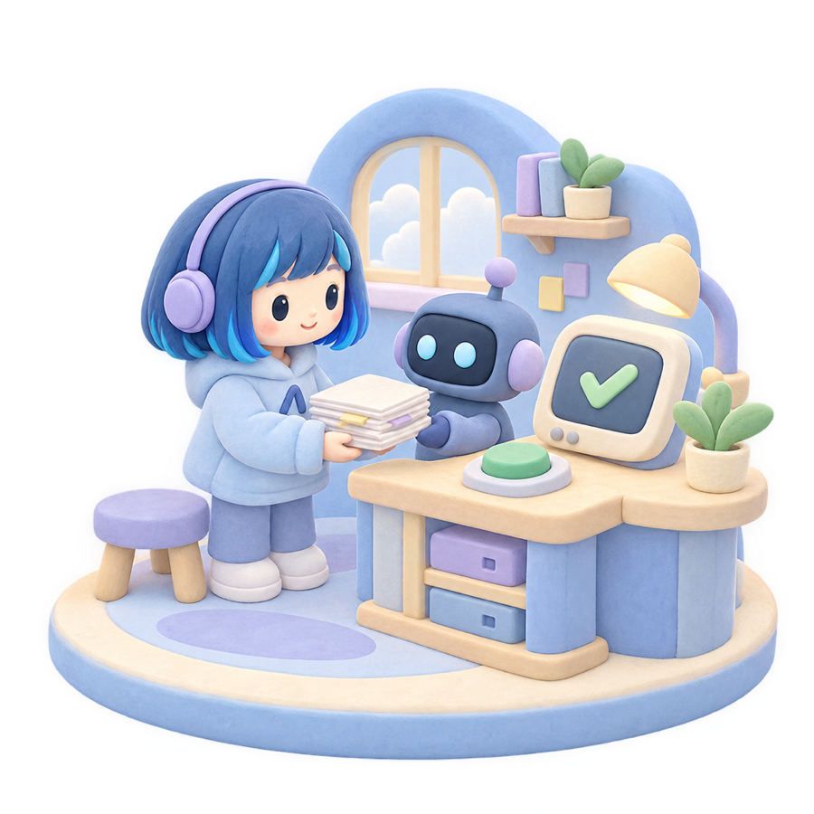
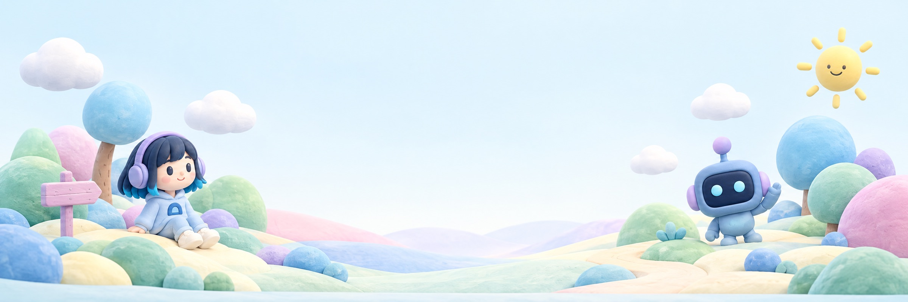

ASISTASIST は Mac 向けのリアルタイムアシスタントです。
話すだけであなたの作業をサポートします。

ねぇ ASIST、今日の予定は?
今日の予定は
こんな感じだよ

天気、予定、メールの下書き、To-Do、
為替、ニュース、地図、タイマーなど。
長野の天気は?
話しかけると、答えと一緒にカードが並びます。

実際の画面です

1

「カレンダーで来週を開いて」と頼んでも開きます

この資料、まとめておいて
→
あなたが承認してから、codex か claude の CLI に引き渡します。
日記 ・ 9月23日(水)
提案書の下書きを一緒に直した日昼過ぎに、提案書の下書きを読み上げてほしいと頼まれた。三つ目の節が前の節と同じことを言っていると気づいて、そう伝えた。
ちゃんと覚えてくれてるんだな…

あなたの Mac に、ASIST を。
asist-agent.comはじめよう!